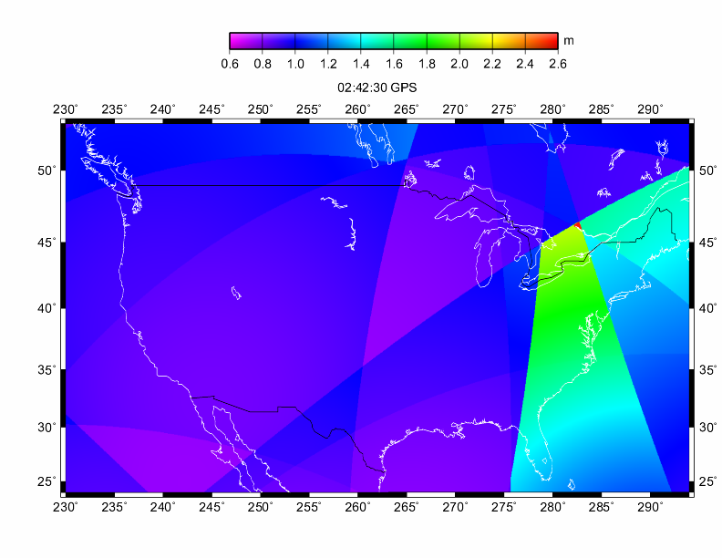

Updated: 2009-nov-04
I recommend my papers:

A Note On The Animations
To View The Animations
You can use your favorite AVI player. I use Windows Media Player version 10. I split the animation into parts for ease of download. Try a part out to see if you like it, and to see if your AVI viewer will work with the contents.
Warning: AVI is a "container" format. There is another video format inside the AVI. The animations are MPEG-4 ASP video format. This is also known as XidD.
Fun Tip: If the AVI plays, and you have downloaded all the parts, then you can do a "drag-and-drop" onto the Windows Media Player window, and it will play the parts in sequence.
The "vanilla" version of Windows Media Player does not recognize the MPEG-4 ASP video format. It might issue an error message. If it does, it's because it wants a codec. It doesn't say this directly, but that's what it wants. You can find the open source XviD codec (XviD-1.1.3-28062007.exe) at:
http://www.xvidmovies.com/codec/
with an FAQ at:
http://www.xvidmovies.com/faq/
Install it, and then Media Player should be happy.
By the way, I don't use Vista. So, if you have a Vista problem, I can't help. Sorry.
Codec stands for compressor/decompressor. Think of it like an
un-zip utility for video files. It will install in the Media Player's
codec library, and be invoked on the fly whenever it is needed.
About The Figure
The figure depicts the 02:42:30 frame from the Horizontal Dilution Of
Precision (HDOP) animation for July 20, 2007. The plot shows HDOP
distribution for an "all satellites in view" solution with a 5 degree cutoff
angle. The HDOP's were computed on a
regular 3'x3' grid over 24-53N, 230-294E (581 rows, 1281 columns). The
figure shows an HDOP excursion (a "DOP hole") of 2.58 just north of Lake
Ontario. The curved boundaries of the HDOP zones are footprints of the GPS
satellites.
To Contact Me
My e-mail user name is the first initial of my first name
followed by all the letters of my last name (see above). My ISP is
"comcast", and it is a "dot-net", not a "dot-com". Sorry for not spelling
out my e-mail address, but I try to keep the spam-bots
from fingering me. But, just so the spam-bots don't feel left
out, they can always go to abuse@comcast.net